Lifeline
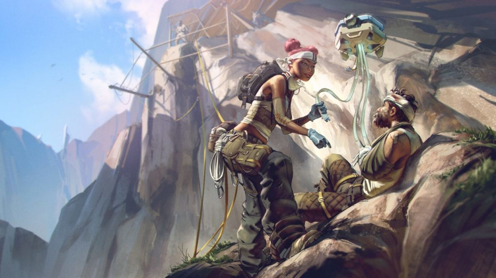One way or another, a player who mains Lifeline is a player who actually wants to win, not just pad their own killcount. That said, you’ll either get two kinds of Lifeline players. One will get stuck into things, offering out their healing drone and care packages at every available opportunity. The other is incredibly stingy, deciding to hog all the available resources, not wanting to the trust the unwashed masses with all that precious care package loot.
Gibraltar
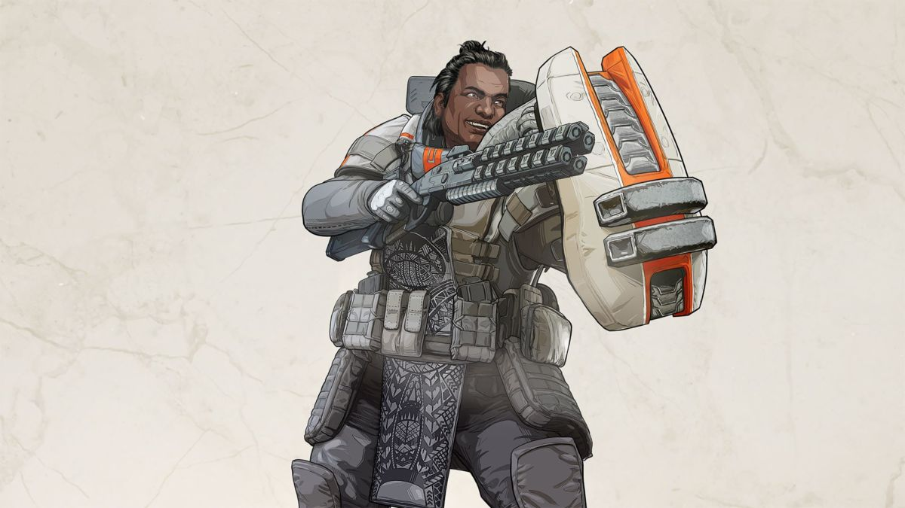Gibraltar players aren’t exactly known for their subtlety, though that might have something to do with the earth shattering sound that erupts every time he takes a step. Everything these players do, they do big, whether it’s taking on squads, going for finishers or raining down death from the sky. With his deployable shield providing invaluable cover from incoming fire, skilled Gibraltar players don’t even understand the meaning of the word retreat. They are an impenetrable wall in an ocean of trash players; crash upon thee and be broken.
Mirage
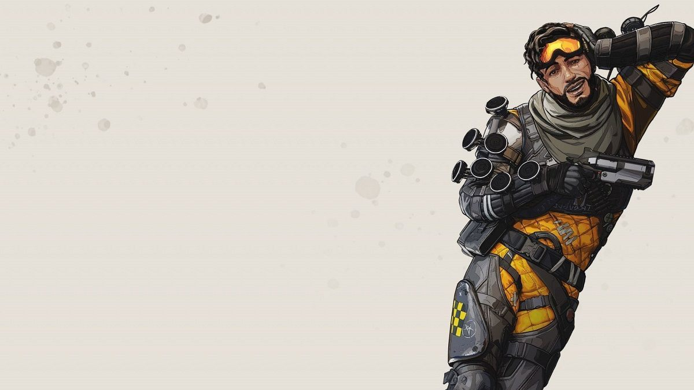We’ve all met a “Mirage” in our lives and thought they were a bit of a prick. You know the type. They think they’re the life and soul of the party but they’ve made the same corny jokes the last 17 times you hung out with them, which totally isn’t irritating. They also probably tried hitting on your partner with zero success. Anyway, Mirage players are basically the same pricks: glory hogging loot hoarders that’ll try and act like the victory was all their doing. Calm down there, Captain Zero Kills.
Caustic
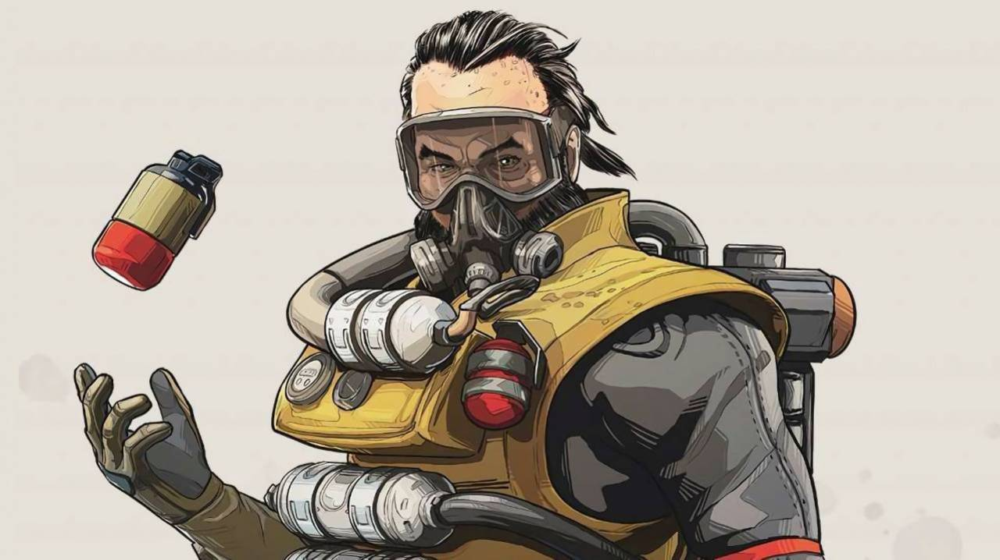The most sadistic of the lot, Caustic players intend to inflict as much suffering on the world as possible, and will absolutely get off on watching it. You better hope they don’t have an active mic, as you’ll probably hear the sound of them violently stroking their thighs every time they get a gas kill. Don’t be surprised to see a Caustic main down someone, surround them in gas cans and laugh maniacally. You should be very worried about this person.
Wraith
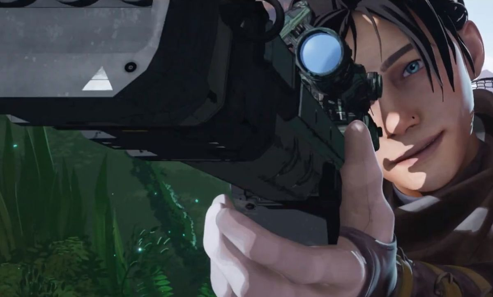Unquestionably the biggest edgelord of the group, Wraith is for those who aren’t just going through “a phase”, before phase shifting around the map. An often solo player with a high tendency of wandering off without informing the squad, a Wraith main was probably one of the people who were upset by the British publication Metro referring to My Chemical Romance frontman Gerard Way as “that guy who made The Umbrella Academy”.
Bangalore
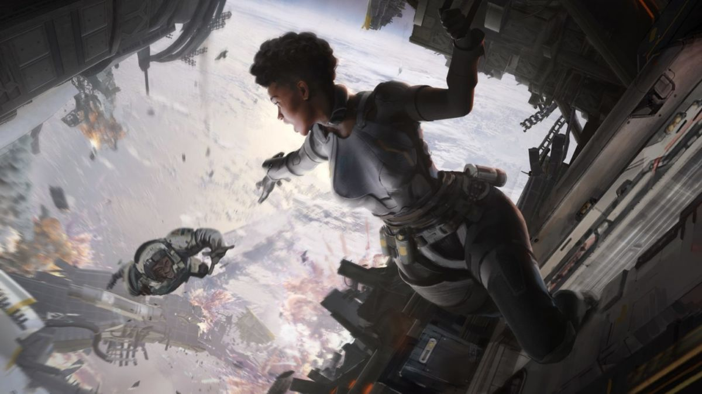Perhaps your most traditional FPS player, Bangalore players know two things: pointing and shooting. Maybe they also took “pinging” as an elective but don’t push your luck. Probably the most aggressive players of the lot, at least before Octane came out, Bangalore players tend to feel right at home in the middle of a firefight, leading to them dropping at Bunker or on the supply ship on an all too regular basis. If you see a Bangalore Jumpmaster, be prepared for a short game.
Pathfinder
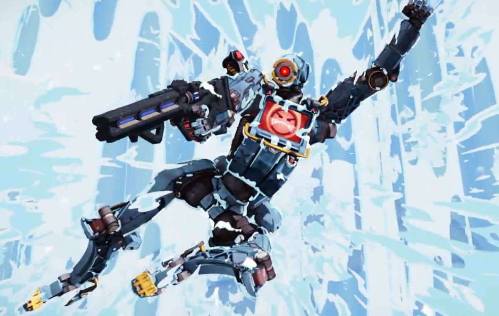While Mirage players can be arrogant in how they think about their own sense of humour, Pathfinder players tend to be more arrogant about their own skill level. They might have seen one or two clips from a Kotaku Highlight Reel with an insane grapple hook kill and think they can replicate it. They can’t. Either way, don’t expect a random Pathfinder to actually scan those Survey Beacons to reveal the next ring location. That would be helpful, and totally not something that can be put into a montage.
Bloodhound
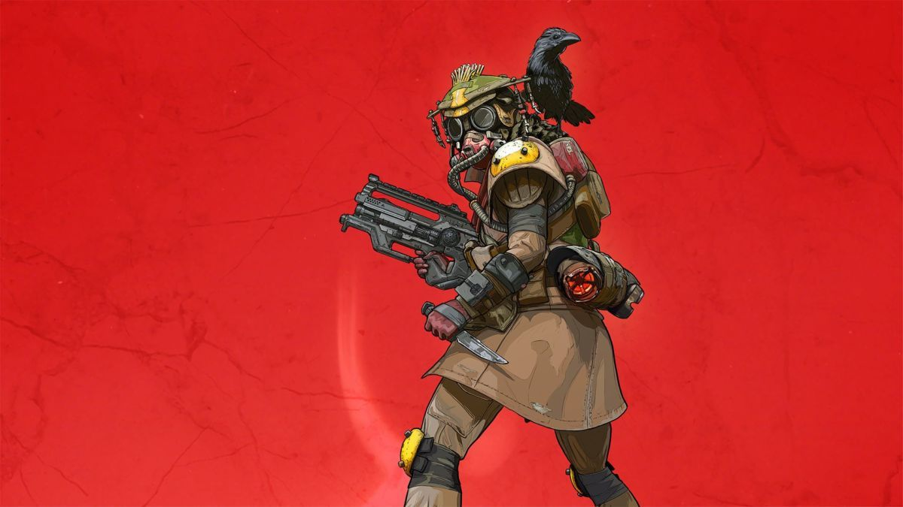Bloodhound players are possibly the most secretive people you’d encounter. You could play entire games with a Bloodhound main, never knowing their full names, identities or what their motivations might be. You’ll certainly never be informed about the fresh footprints leading into the house you’ve just entered, or the host of other vital tracking information that Bloodhound players are privy to, but that’s fine. At the very least, they’ll scan the building after you get shotgunned.
Octane
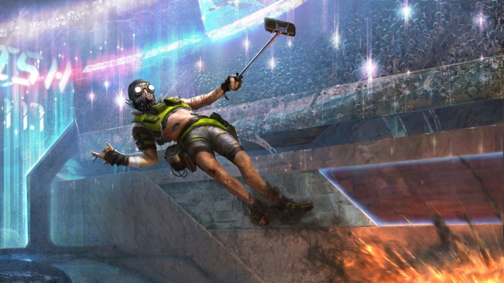Apex’s very own daredevil and speedy boy, Octane mains are the same people who ran stim pack loadouts in Titanfall 2, using the speed boost to lessen the time between firefights. With the speed boost coming at the cost of health, Octane players are risk takers by their very nature, so don’t be surprised to find your teammate using his jump pad liberally to try and “third party” a firefight. You should then be even less surprised to find your squad on the receiving end of a fourth party led by another Octane.
Wattson
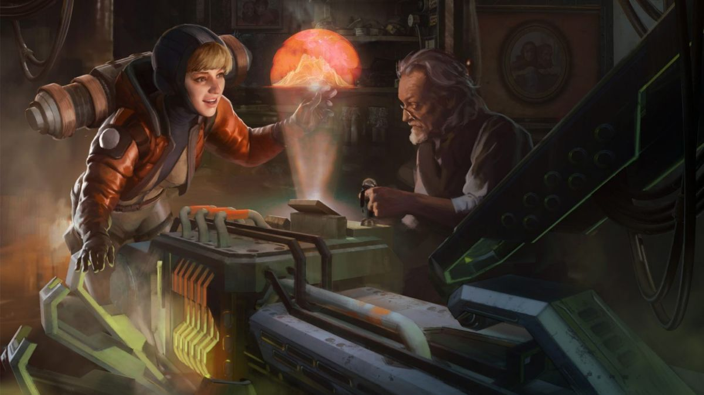It’s always a shock to see someone maining Wattson. Sorry, couldn’t help myself. Anyway, Wattson emits an elegant demeanour, but on the inside, Wattson mains just can’t help but put their walls up. Wattson helped build the containment ring that forces the players into close proximity to each other, so she knows the arena inside and out. Expect a Wattson main to do the same, or to completely suck if I’m playing as her.
Crypto
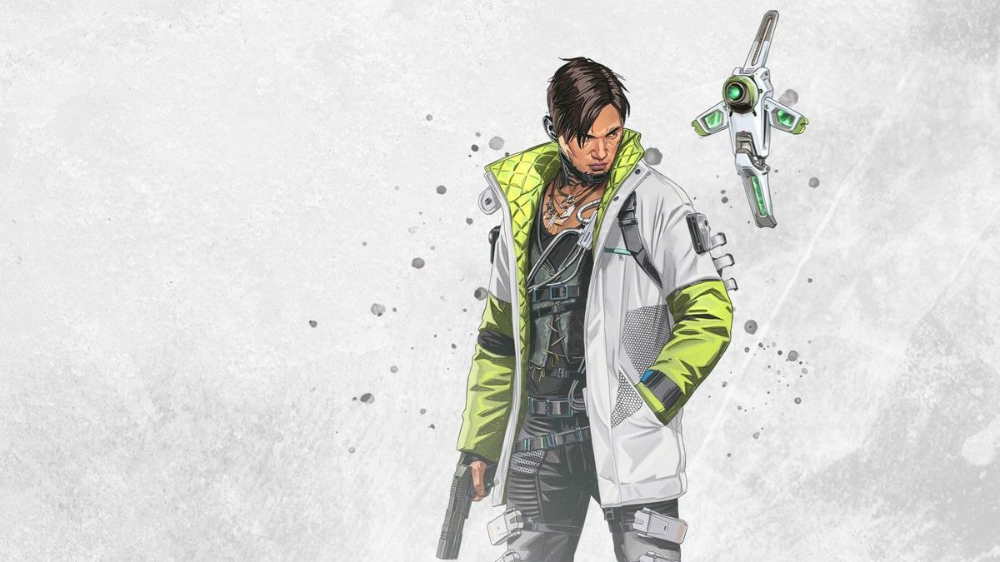The hacker of the roster, Crypto’s technological know-how and lone wolf energy meshes well with the types of people who post “Hackerman” memes on Facebook because their parents asked them to reset the router. His drone is useful enough for players to get the drop on other squads, so don’t expect a random Crypto player on your team to ever touch it. Ever.